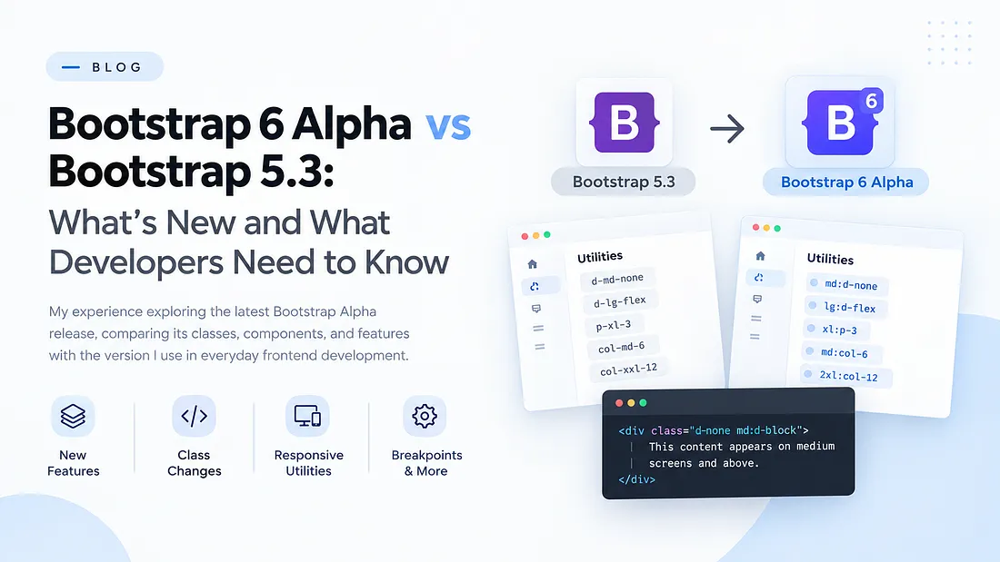

Bootstrap 6 Alpha vs Bootstrap 5.3: What's New and What Developers Need to Know


"Learning a new version of a tool you already use is rarely about starting over. It is about seeing familiar things from a different angle, and noticing what has genuinely changed."
Bootstrap has been a consistent part of my frontend work — for responsive landing pages, navigation bars, forms, modals, accordions, and most of the components that appear in everyday projects. Across Bootstrap 4, Bootstrap 5, and older versions I have maintained in legacy codebases, I have developed a working familiarity with its grid, utilities, breakpoints, and components.
When Bootstrap 6.0 Alpha was released, I wanted more than a summary of new features. I wanted to understand what had changed in relation to Bootstrap 5.3, which is the version I use daily. So I went through the documentation systematically and documented the differences that seemed likely to affect real projects.
This article presents what I found, with side-by-side comparisons. If you are currently using Bootstrap 5, it should give you a practical sense of what is changing and what to watch for.
Before We Start: What Do Alpha, Beta, and Stable Mean?
Release stage matters, and it is worth being precise about what each label means before discussing the changes themselves.
- Alpha — an early development release. It exists to let developers experiment, test implementations, and surface problems.
- Beta — more mature than alpha. Broader testing is possible, but bugs and breaking changes may still occur.
- Stable — intended for general use and the appropriate default for production projects, though bug fixes and minor updates continue.
Because Bootstrap 6 is in Alpha, I would treat it as something to explore and evaluate rather than something to swap into an existing production site. The remainder of this article assumes that framing.
1. Installing Bootstrap 6 Alpha
Installation itself will feel familiar. Bootstrap 6 can be installed through npm, pnpm, Yarn, or Bun, or included via CDN. The meaningful difference when working with an alpha release is that I prefer to pin the exact version rather than let a package manager resolve one.
# npm
npm install bootstrap@6.0.0-alpha.1
# pnpm
pnpm add bootstrap@6.0.0-alpha.1
# Yarn
yarn add bootstrap@6.0.0-alpha.1
# Bun
bun add bootstrap@6.0.0-alpha.1For CDN installation, use the CSS and JavaScript URLs from the official Bootstrap 6 documentation. One detail worth noting is that Bootstrap 6 relies on ES modules for its JavaScript plugins. If you maintain a project built around an older JavaScript setup, review the new installation instructions before upgrading.
2. Responsive Utility Classes Have Changed
In Bootstrap 5, responsive utilities follow a suffix pattern —
d-md-none, col-lg-4, p-xl-3.
After a while, this pattern becomes instinctive. Bootstrap 6 Alpha
reverses it: the responsive prefix moves to the beginning of the class
name.
| Bootstrap 5.3 | Bootstrap 6 Alpha |
|---|---|
d-md-none |
md:d-none |
d-lg-flex |
lg:d-flex |
p-xl-3 |
xl:p-3 |
col-md-6 |
md:col-6 |
col-xxl-12 |
2xl:col-12 |
The intent is identical, but the naming convention is different. In markup, the change looks like this:
<div class="d-none d-md-block">
This content appears on medium screens and above.
</div><div class="d-none md:d-block">
This content appears on medium screens and above.
</div>
Bootstrap 6 also introduces state modifiers such as
hover: for utilities where supported. This brings part
of the utility-first convention popularised by Tailwind CSS into
Bootstrap's own naming scheme.
3. Breakpoints Have Shifted at the Larger Sizes
Breakpoints deserve particular attention because even a small change can affect an existing layout. The lower breakpoints are unchanged; the larger ones have moved.
| Breakpoint | Bootstrap 5.3 | Bootstrap 6 Alpha |
|---|---|---|
| Extra small | Below 576px | Below 576px |
| Small (sm) | ≥ 576px | ≥ 576px |
| Medium (md) | ≥ 768px | ≥ 768px |
| Large (lg) | ≥ 992px | ≥ 1024px |
| Extra large (xl) | ≥ 1200px | ≥ 1280px |
| Extra extra large | ≥ 1400px (xxl) | ≥ 1536px (2xl) |
The practical consequence: in Bootstrap 5, a layout using
col-lg-4 begins applying its large-screen sizing at
992px. In Bootstrap 6 Alpha, the corresponding lg:col-4
begins at 1024px. When a design is matched to specific viewport
widths, that difference matters.
4. Container Classes Use a New Naming Pattern
Bootstrap 5 provides responsive containers as
.container-md, .container-lg, and so on.
Bootstrap 6 Alpha moves the breakpoint to a prefix.
| Bootstrap 5.3 | Bootstrap 6 Alpha |
|---|---|
.container |
.container |
.container-sm |
.sm:container |
.container-md |
.md:container |
.container-lg |
.lg:container |
.container-xl |
.xl:container |
.container-xxl |
.2xl:container |
.container-fluid |
.container-fluid |
The default .container and .container-fluid
remain unchanged. A responsive container that adopts the large-screen
width from the lg breakpoint onward therefore changes
from:
<div class="container-lg">
Page content
</div>to:
<div class="lg:container">
Page content
</div>This is a good illustration of why checking documentation matters. Responsive containers still exist; the way you express them in HTML has changed.
5. The Grid System: Familiar Structure, New Prefixes
The grid remains the most familiar part of Bootstrap for most frontend developers, and the good news is that the underlying concepts are intact. Rows, columns, and responsive behaviour all still exist. The responsive column classes simply adopt the new prefix convention.
<div class="container">
<div class="row">
<div class="col-12 col-md-6 col-lg-4">
First card
</div>
<div class="col-12 col-md-6 col-lg-4">
Second card
</div>
<div class="col-12 col-md-6 col-lg-4">
Third card
</div>
</div>
</div><div class="container">
<div class="row">
<div class="col-12 md:col-6 lg:col-4">
First card
</div>
<div class="col-12 md:col-6 lg:col-4">
Second card
</div>
<div class="col-12 md:col-6 lg:col-4">
Third card
</div>
</div>
</div>
Notice that .row and .col-12 are unchanged.
Only the responsive variants use the new prefix syntax. This is a
useful distinction: Bootstrap 6 does not require relearning the entire
grid system, only recognising which parts have changed.
6. Buttons Have a Different Class Structure
In Bootstrap 5, a button typically combines .btn with a
variant such as .btn-primary. Bootstrap 6 Alpha
separates the button's style from its theme.
<button type="button" class="btn btn-primary">
Get Started
</button><button type="button" class="btn-solid theme-primary">
Get Started
</button>
.btn-solid describes the variant, while
.theme-primary supplies the theme. The documentation
lists additional variants, including outline, subtle, and text-style
buttons.
| Purpose | Bootstrap 5.3 | Bootstrap 6 Alpha |
|---|---|---|
| Solid primary | .btn .btn-primary |
.btn-solid .theme-primary |
| Outline primary | .btn .btn-outline-primary |
.btn-outline .theme-primary |
| Subtle primary | No standard equivalent | .btn-subtle .theme-primary |
| Text-style primary | No standard equivalent | .btn-text .theme-primary |
These class names are not interchangeable with their Bootstrap 5 equivalents. Existing buttons need to be reviewed and updated against the new component documentation.
7. Colour Utilities: From text- to fg-
Bootstrap 5 applies a primary text colour through
.text-primary. Bootstrap 6 Alpha uses a foreground
utility instead: .fg-primary.
| Purpose | Bootstrap 5.3 | Bootstrap 6 Alpha |
|---|---|---|
| Primary text/foreground | .text-primary |
.fg-primary |
| Primary background | .bg-primary |
.bg-primary |
| Primary theme | Component-specific variants | .theme-primary |
| Subtle primary background | Existing utility patterns | .bg-subtle-primary |
These are not straightforward replacements for one another.
Foreground utilities control text or foreground colour, background
utilities control backgrounds, and theme classes apply theme styling
— typically across multiple properties within a component. Bootstrap
6 also introduces theme-aware utilities such as
.fg-emphasis-primary.
The framework modernises its colour implementation with CSS functions
including oklch(), color-mix(), and
light-dark(). This is worth exploring further, because
colour systems become particularly consequential when building
reusable components and supporting light and dark themes.
8. Accordion: Moving Towards Native HTML
Bootstrap 5's accordion component relies on buttons and Bootstrap's collapse functionality. A simplified example:
<div class="accordion" id="faqAccordion">
<div class="accordion-item">
<h2 class="accordion-header">
<button
class="accordion-button collapsed"
type="button"
data-bs-toggle="collapse"
data-bs-target="#faqAnswer"
aria-expanded="false"
aria-controls="faqAnswer"
>
What is Bootstrap?
</button>
</h2>
<div
id="faqAnswer"
class="accordion-collapse collapse"
data-bs-parent="#faqAccordion"
>
<div class="accordion-body">
Bootstrap is a frontend toolkit for building responsive interfaces.
</div>
</div>
</div>
</div>
Bootstrap 6 Alpha moves the accordion onto native HTML disclosure
elements — <details> and
<summary>:
<div class="accordion">
<details class="accordion-item">
<summary class="accordion-header">
What is Bootstrap?
</summary>
<div class="accordion-body">
Bootstrap is a frontend toolkit for building responsive interfaces.
</div>
</details>
</div>
The example above illustrates the native pattern; the complete
implementation should follow the Bootstrap 6 documentation. What
makes this change interesting is that <details>
already supports opening and closing in the browser, so an individual
disclosure does not need JavaScript just to toggle visibility.
9. Modal Becomes Dialog, Offcanvas Becomes Drawer
Bootstrap 6 Alpha introduces Dialog and Drawer patterns in place of
Modal and Offcanvas, built on the native
<dialog> element.
| Bootstrap 5.3 | Bootstrap 6 Alpha |
|---|---|
| Modal | Dialog |
.modal |
Dialog component classes |
| Offcanvas | Drawer |
.offcanvas |
.drawer |
| Responsive offcanvas variants | Prefix-based Drawer variants |
A Dialog and a Drawer serve different interface purposes even when they share underlying browser functionality. When migrating these components, review the new markup, data attributes, JavaScript API, focus handling, backdrop behaviour, and accessibility requirements — do not simply replace class names.
10. Forms: New Components and Updated Markup
Bootstrap 6 Alpha changes form controls and validation, and introduces several new form-related components: field layouts, range controls, form adornments, chips, comboboxes, date pickers, OTP inputs, and password-strength indicators.
For migration, one of the simpler but more wide-reaching changes is
the consolidation of select styling into .form-control.
In Bootstrap 5.3, a select element uses
class="form-select"; in Bootstrap 6 Alpha, it uses
class="form-control". The change is trivial in isolation,
but it applies to every <select> element in an
existing project.
Validation also changes. Consult the migration guide rather than assuming that existing validation classes and data attributes will continue to work unchanged.
11. New Components: Avatar, Stepper, and Navoverflow
Bootstrap 6 Alpha also expands the component collection. Three additions are worth noting:
- Avatar — for displaying a person's image or initials in profile sections, user lists, and dashboards.
- Stepper — for interfaces involving multiple stages, such as registration, booking, or checkout flows.
- Navoverflow — for navigation layouts where the number of items exceeds the available space.
The carousel also gains additional layout options, including multiple visible slides, peeking layouts, and mixed-width slides. These additions matter because they represent patterns developers commonly build by hand or reach for a third-party library to supply.
12. AI Support and Documentation
An unusual but relevant addition in the Bootstrap 6 documentation is
its support for AI-assisted development. The documentation exposes
machine-readable resources such as /llms.txt and
/llms-full.txt, and the Bootstrap repository provides a
coding-agent skill for compatible workflows.
This matters because many developers now rely on AI assistants for
code generation, troubleshooting, and API exploration. The important
caveat is that AI-generated code still needs to be verified against
the correct framework version. An assistant trained on Bootstrap 5
material may reasonably suggest .text-primary or
.col-md-6 — neither of which matches the Bootstrap 6
Alpha convention.
AI is a useful assistant, but framework understanding remains essential. The better you know the tool, the faster you recognise an incorrect or outdated suggestion.
13. CSS Architecture and Modern Browser Features
Not every change in Bootstrap 6 is visible in HTML. The framework also modernises its Sass and CSS architecture, including Sass modules, CSS cascade layers, and heavier reliance on modern browser features:
- Sass
@useand@forwardmodules - CSS cascade layers
- Container queries
- Modern media-query range syntax
- CSS colour functions including
oklch()andcolor-mix() - Specificity management through selectors such as
:where() - Native HTML disclosure and dialog behaviour
Container queries deserve particular attention because they allow an element to respond to the size of its container rather than only the viewport width:
.card-container {
container-type: inline-size;
}
@container (width >= 600px) {
.card-content {
display: flex;
gap: 1rem;
}
}This is standard CSS illustrating the concept rather than a Bootstrap-specific utility. Container queries are worth understanding because reusable components often appear in different contexts: a card in a sidebar may need a different layout from the same card in a full-width section. Modern CSS provides ways to handle these situations without writing separate viewport-based rules for every possible placement.
14. Should You Migrate from Bootstrap 5.3 to Bootstrap 6 Alpha?
My recommendation is not to upgrade an existing production website simply because a new major version exists. Bootstrap 5.3 remains a sound choice for current projects, and the decision to migrate should depend on project requirements, browser support, and the actual value of the new features for your work.
If you are learning Bootstrap 6 Alpha, the most useful first step is a small, isolated test project. Rebuild a section you have already developed in Bootstrap 5 and compare the results directly:
- Rebuild the markup using the new utility prefixes.
- Compare responsive behaviour at the same viewport widths.
- Recreate components and note any markup differences.
- Measure how much custom CSS is still required.
This exercise will give you a far more concrete understanding of the differences than reading a list of class names. Because the new version is in Alpha, keep the experiment separate from production work and revisit the official migration guide as the release evolves.
Conclusion
My reason for exploring Bootstrap 6 Alpha was straightforward: I wanted to understand what had changed in a framework I use every day. Some changes were immediately visible — the responsive prefix syntax, for instance. Others required a deeper look at component behaviour, CSS architecture, and JavaScript integration.
The broader lesson is that familiarity with Bootstrap 5 does not automatically translate into familiarity with Bootstrap 6. Many concepts carry over, but the implementation differences are substantial enough to affect existing projects.
For now I am continuing to work through the documentation, test examples, and keep my own comparison notes. I do not see this as a race to adopt the latest version. It is a way to keep learning and to understand the tools I rely on more deeply.
If you use Bootstrap 5.3 in your own projects, I would encourage exploring Bootstrap 6 Alpha as a learning exercise. Start with the utilities and components you use most often, compare their implementations, and test the changes yourself.
If you found this useful, or would like to discuss the direction of the framework, feel free to get in touch. I am always happy to exchange notes with other frontend developers.